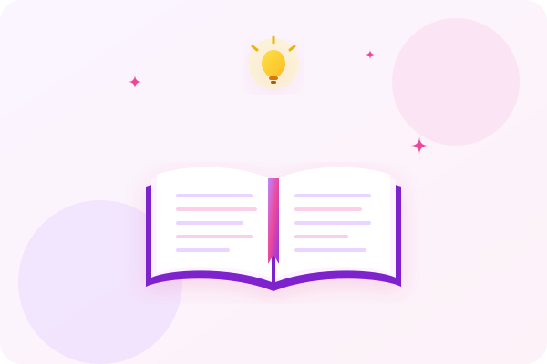
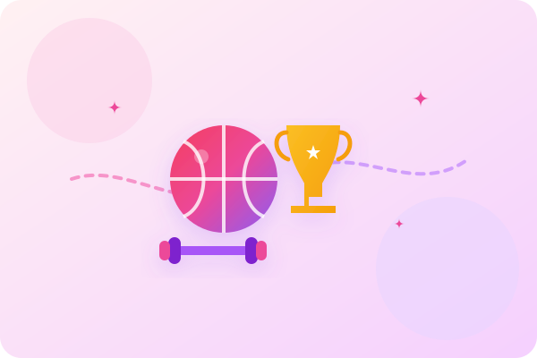
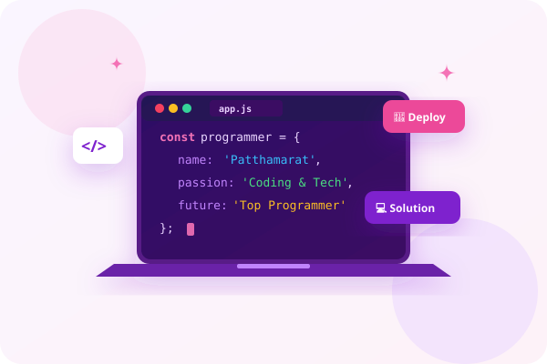
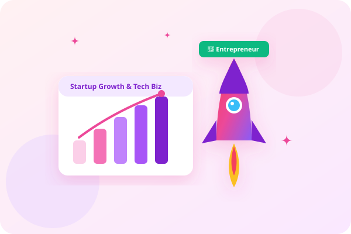
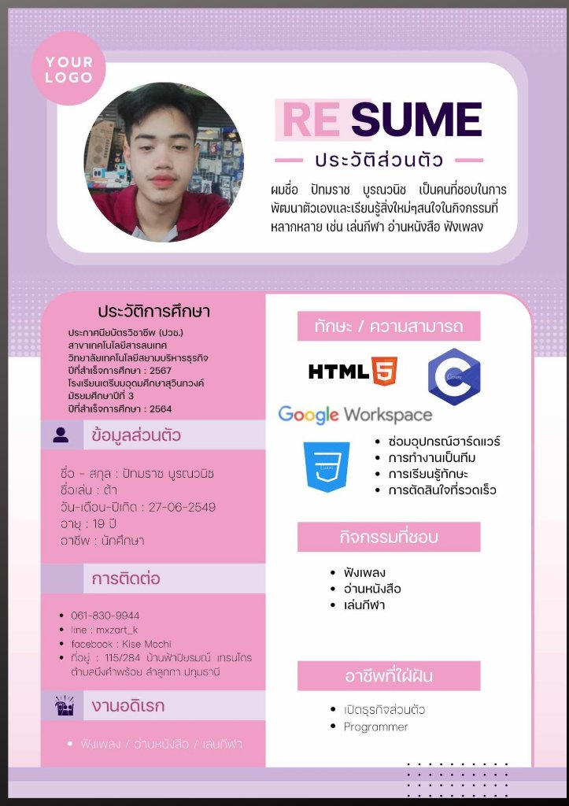

"สวัสดีครับ ผมชื่อปัทมราช เป็นนักศึกษาที่มีความสนใจด้านเทคโนโลยีสารสนเทศ ชอบพัฒนาตัวเองและเรียนรู้สิ่งใหม่ ๆ อยู่เสมอ มีความสนใจในการเขียนโปรแกรม เทคโนโลยี และการพัฒนาทักษะเพื่อเติบโตในสายงาน IT"
ทำความรู้จักตัวตน ข้อมูลส่วนตัว และความมุ่งมั่นในการเรียนรู้สายงานเทคโนโลยี
ผมเป็นคนที่ชอบในการพัฒนาตัวเองและเรียนรู้สิ่งใหม่ ๆ อยู่เสมอ ให้ความสนใจในสายงานเทคโนโลยีสารสนเทศ การเขียนโปรแกรม และโครงสร้างระบบคอมพิวเตอร์ มีความพร้อมในการฝึกฝนทักษะเพื่อก้าวเข้าสู่อุตสาหกรรมเทคโนโลยีในฐานะ Programmer มืออาชีพ
นอกจากด้านวิชาการและการเขียนโค้ดแล้ว ผมยังชอบทำกิจกรรมที่หลากหลาย เช่น การเล่นกีฬา การอ่านหนังสือเพื่อเปิดโลกทัศน์ และการฟังเพลงเพื่อสร้างแรงบันดาลใจและสมาธิในการทำงาน
ใฝ่รู้ ต่อยอดทักษะใหม่ ๆ และไม่หยุดนิ่งที่จะปรับปรุงตนเอง
เปิดใจรับฟังความคิดเห็น สื่อสารชัดเจน และร่วมมือแก้ปัญหา
เข้าใจชิ้นส่วนคอมพิวเตอร์ ซ่อมแซมและแก้ปัญหาอุปกรณ์ได้
มีไหวพริบในการวิเคราะห์สถานการณ์และแก้ไขปัญหาเฉพาะหน้า
เส้นทางการศึกษาและพื้นฐานความรู้ด้านเทคโนโลยีสารสนเทศ
ศึกษาหลักสูตรเทคโนโลยีสารสนเทศ เน้นความรู้ด้านการเขียนโปรแกรมคอมพิวเตอร์ การพัฒนาเว็บไซต์ โครงสร้างฮาร์ดแวร์ เครือข่ายคอมพิวเตอร์ และการนำเทคโนโลยีไปประยุกต์ใช้งานจริง
สำเร็จการศึกษาชั้นมัธยมศึกษาปีที่ 3 สร้างพื้นฐานการคิดเชิงตรรกะ คณิตศาสตร์ และการใช้คอมพิวเตอร์เบื้องต้น ซึ่งเป็นจุดเริ่มต้นที่ทำให้สนใจศึกษาต่อในสายงาน IT
ทักษะทางเทคนิค (Technical Skills) และทักษะด้านอารมณ์และการทำงาน (Soft Skills) จากเรซูเม่
ทักษะด้านการเขียนโค้ด ซอฟต์แวร์ และเทคโนโลยีสารสนเทศ
การจัดโครงสร้างเว็บเพจ Semantic Elements, SEO เบื้องต้น และ Accessibility
การจัด Layout ด้วย Flexbox, CSS Grid, Responsive Design และ Soft UI Animations
ความเข้าใจด้าน Logic, ตัวแปร, Control Flow, Functions, Arrays และ Memory พื้นฐาน
การทำงานร่วมกันบน Cloud ด้วย Google Docs, Sheets, Slides, Drive และ Forms
ทักษะด้านการปฏิบัติ การทำงานร่วมกับผู้อื่น และการแก้ปัญหา
ตรวจวิเคราะห์ปัญหาชิ้นส่วนคอมพิวเตอร์ การประกอบ PC และการแก้ปัญหาอุปกรณ์เบื้องต้น
สื่อสารอย่างมีประสิทธิภาพ ช่วยเหลือเพื่อนร่วมงาน และเปิดรับคำติชมเพื่อพัฒนาชิ้นงาน
มีความกระตือรือร้นในการค้นคว้าเทคโนโลยีใหม่ สามารถปรับตัวเข้ากับเครื่องมือใหม่ได้รวดเร็ว
ประเมินสถานการณ์อย่างรอบคอบ พร้อมหาแนวทางแก้ไขปัญหาที่เกิดขึ้นได้อย่างทันท่วงที
กิจกรรมยามว่างที่ช่วยเติมเต็มความคิดสร้างสรรค์ พลังกาย และสมาธิในการเรียนรู้
การฟังเพลงเป็นกิจกรรมโปรดที่ช่วยสร้างบรรยากาศ เสริมสมาธิในการเขียนโค้ดและอ่านตำรา ช่วยผ่อนคลายความตึงเครียดและจุดประกายความคิดสร้างสรรค์ใหม่ ๆ อยู่เสมอ

ชอบอ่านหนังสือเพื่อเติมเต็มความรู้ ทั้งหนังสือด้านเทคโนโลยี วิทยาการคอมพิวเตอร์ และการพัฒนาตนเอง (Self-Improvement) ช่วยเปิดมุมมองความคิดให้กว้างไกลและลึกซึ้งยิ่งขึ้น

การออกกำลังกายและเล่นกีฬาช่วยเสริมสร้างสุขภาพร่างกายให้แข็งแรง สดชื่น กระปรี้กระเปร่า พร้อมทั้งฝึกฝนทักษะการทำงานร่วมกับเพื่อนร่วมทีม ความมีน้ำใจนักกีฬา และการมีวินัย
ความมุ่งมั่นและเส้นทางอาชีพที่ตั้งใจจะพัฒนาตนเองอย่างต่อเนื่องเพื่อไปให้ถึงจุดหมาย
มุ่งมั่นที่จะเติบโตเป็นนักพัฒนาโปรแกรมมืออาชีพ เชี่ยวชาญการเขียนโค้ดที่มีประสิทธิภาพ สามารถพัฒนาเว็บแอปพลิเคชันและซอฟต์แวร์ที่ช่วยแก้ไขปัญหาให้กับผู้ใช้งานและองค์กรได้อย่างแท้จริง

นำความรู้และประสบการณ์ด้านเทคโนโลยีสารสนเทศ การพัฒนาซอฟต์แวร์ และฮาร์ดแวร์ มาต่อยอดสู่การสร้างโมเดลธุรกิจของตนเอง พัฒนาผลิตภัณฑ์หรือบริการเทคโนโลยีที่สร้างประโยชน์แก่สังคม

ยินดีรับฟังข้อเสนอแนะ โอกาสในการฝึกงาน หรือร่วมพูดคุยแลกเปลี่ยนด้านเทคโนโลยี
ที่อยู่โดยละเอียดและเอกสารฉบับเต็มยินดีจัดส่งเพิ่มเติมเมื่อมีการติดต่อเพื่อการฝึกงานหรือร่วมงานกับองค์กรของท่าน
กรอกแบบฟอร์มด้านล่างเพื่อติดต่อสอบถามหรือมอบโอกาสในการร่วมงาน
